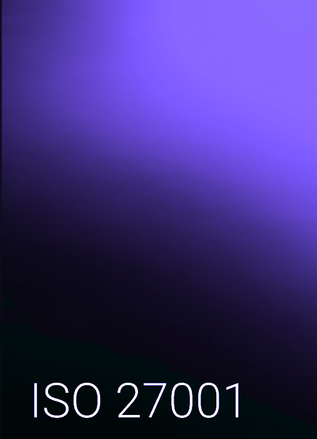
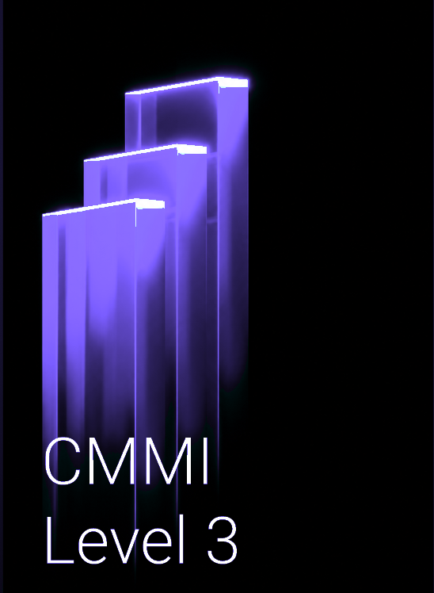
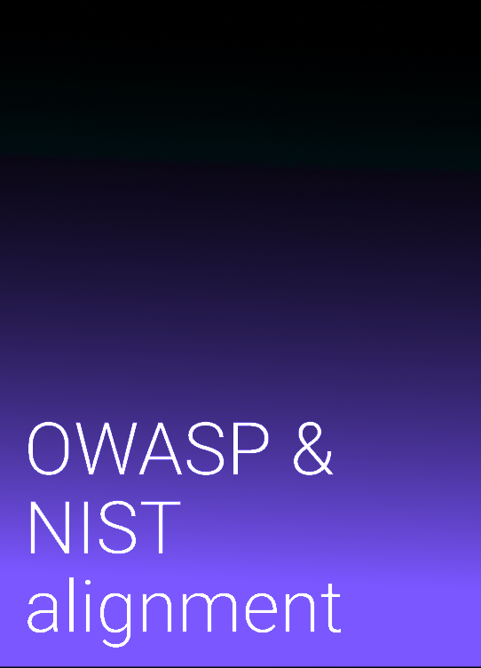
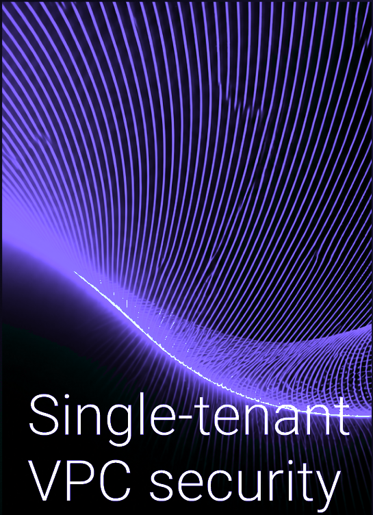
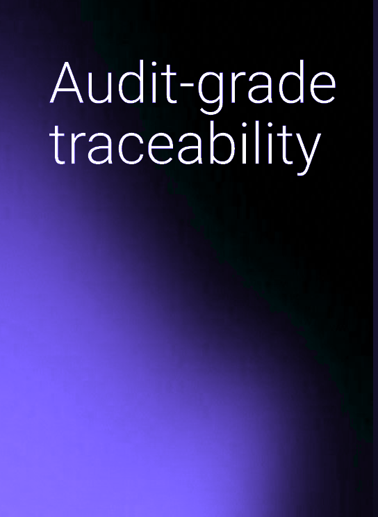

Autonomous Testing.
Continuous Trust.
Fast releases mean nothing if defects slip through to production.
Test AI generates, executes, and self-heals tests across unit, integration, API, UI, performance, and security—keeping quality synchronized with rapid delivery.
When Testing Can’t
Keep Pace With Code.
As development accelerates, testing becomes the bottleneck that either slows delivery or gets compromised to meet deadlines.
- Manual test creation falls behind continuous deployment cycles
- Test suites become brittle, requiring constant maintenance as code evolves
- Coverage gaps appear between unit tests and end-to-end user journeys
- Security and performance testing are treated as late-stage gates rather than continuous controls
Test AI closes the gap between code velocity and quality assurance—turning testing from a bottleneck into an accelerator.

Generate. Prioritize.
Execute. Heal.
Govern.
Test AI automates the full testing lifecycle—from intelligent test generation through autonomous execution, continuous self-healing, and governed auditability.
Analyzes requirements, code changes, and user flows to automatically generate comprehensive test suites across API, UI, unit, and performance layers.
Risk-based test selection runs the most critical tests first based on code changes, defect history, and business impact—optimizing execution time.
Autonomous multi-environment execution across browsers, devices, and operating systems with parallel processing and intelligent orchestration.
Dynamic locator updating and ML-driven selector repair automatically fix broken tests when UI changes occur—slashing maintenance overhead by up to 80%.
Continuous compliance validation, traceability mapping from requirement to test execution, and tamper-proof audit trails for enterprise regulatory assurance.
From code commit to production release, every test run is orchestrated, verified, and continuously optimized.
Coverage That
Carries Through Every Change
Traditional test automation breaks with change. Test AI adapts with it.
Quality is no longer an afterthought or a final barrier—it is continuously woven into every build.
Quality That
Keeps Pace With
Performance.
Designed for enterprise teams who cannot afford to choose between release speed and software reliability.
*Metrics reflect observed outcomes across enterprise deployments. Results vary by codebase complexity and test maturity.
Intelligent Test
Automation — FinTech
Tier-1 financial institution replaced fragile legacy Selenium suites with Test AI—cutting QA cycle times by 45% and reaching 96% automated coverage across trading workflows.
Learn More →
One Governed Core,
Every Test Run.
Enterprise testing requires verifiable controls. Test AI ensures every test artifact, result, and metric adheres to industry compliance frameworks.






Download the
Test AI Playbook
See how autonomous testing accelerates release velocity while raising quality standards across the enterprise.
Ready to
Accelerate Testing?
Talk with our testing specialists about transforming your QA organization with autonomous test generation, execution, and healing.
Get a Free Assessment →
Built Into the Workflow
Your Teams Already Use.
Test AI integrates seamlessly with your CI/CD pipelines, issue trackers, version control, and test reporting tools—enhancing existing workflows without disruption.
Backed by V2Soft—28 years building enterprise IT for regulated industries.

Modernize Legacy Applications
with Enterprise-Grade AI,
Get a Free Assessment.